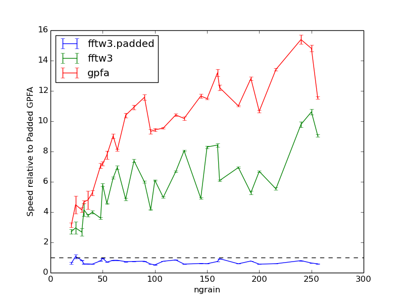
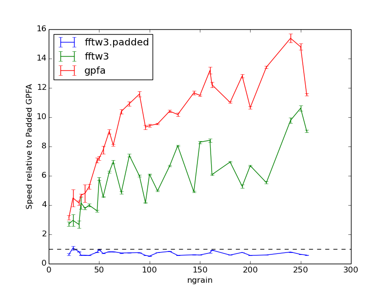

Next: GNU Free Documentation License, Previous: Testing against previous results, Up: Top [Contents][Index]
Currently, GGADT allows you to choose between two FFT algorithms: FFTW 3 (http://fftw.org/), which requires you install the FFTW3 library, and GPFA (Generalized Prime Factor Algorithm)11, which is self-contained and included with the GGADT package. GPFA is used by default, and, as shown below, is slightly faster than FFTW in the current version of GGADT.
If you wish to use the FFTW3 version of GGADT, you will need to install FFTW 3.3.x (we have only tested 3.3.3, but GGADT should in principal be compatible with all 3.x.x versions). GGADT will not work with FFTW 2.x, as the two interfaces are different.
Though \(S(\theta,\phi)\) is in principle determined by a 2d FFT of the shadow function, if you only care about the orientational average of \(d\sigma/d\Omega(\theta,\phi)\), you can assume axisymmetry and take \(\phi=0\). When you do this, you can integrate along one axis of the shadow function to obtain an effective shadow function,
\[ g(x) \equiv \int_{-\infty}^{\infty}f(x,y)dy \]
The calculation of \(d\sigma/d\Omega(\theta)\) then requires that one-dimensional DFT’s be taken of \(g(x)\) instead of two-dimensional DFT’s of \(f(x,y)\).
In addition, to avoid padding, we can do several (smaller) FFT’s of \(g^\delta_n\), where \(g^\delta_n = \sum e^{-2\pi i\delta(n/N)}g_n\); and take only the first K values that we care about (small \(k\) values correspond to small scattering angles). These two tricks speed things up tremendously (2-3 orders of magnitude). In general, the computational time of the old padded, 2d FFT method and GGADT is:
\[ t_{\rm naive}\propto \left(\frac{N}{x}\frac{\pi}{\delta\theta}\right)^2\log\left(\frac{N}{x}\frac{\pi}{\delta\theta}\right). \]
Utilizing mutliple FFT’s (\(N_{\rm FFT} = (\theta_{\rm max}/\delta\theta) / K\)) of length \(K = N k\Delta x(\theta_{\rm max}/2\pi) = x(\theta_{\rm max}/\pi)\), requires a computational time that scales as
\[ t_{\rm GGADT} \propto \left(\frac{1}{x}\frac{\pi}{\delta\theta}\right)\log\left[x\left(\frac{\theta_{\rm max}}{2\pi}\right)\right] + \beta N^2. \]
More information about this can be found in Hoffman and Draine (2015) (in prep).
 

Temperton, C. (1992). A Generalized Prime Factor FFT Algorithm for any \(N=2^p3^q5^r\). SIAM Journal on Scientific and Statistical Computing, 13(3), 676-686.
Next: GNU Free Documentation License, Previous: Testing against previous results, Up: Top [Contents][Index]